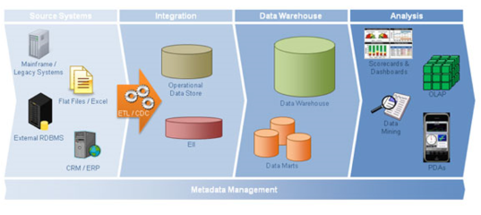
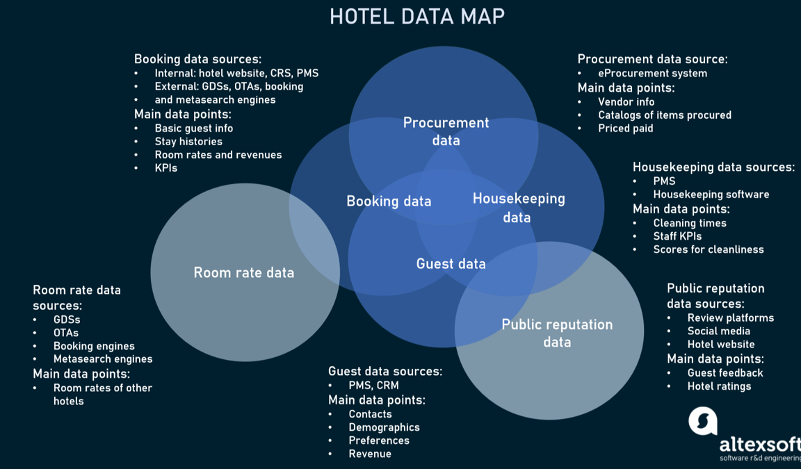

Ni Wayan Sumartini Saraswati
Desember, 2023
BUSINESS INTELLIGENCE DAN BIG DATA UNTUK HOSPITALITY
BUSINESS INTELLIGENCE SYSTEM
Bussiness Intelligence System (BI System) adalah sebuah payung istilah untuk menjelaskan beberapa kemampuan sistem yang terdiri dari : Decision Support System, Data Warehousing, Online Analytical Processing, Data Mining, Data Analytics, dan Big Data (Mariani et al., 2018) .
BI System merupakan sistem yang melakukan pengolahan (transformasi) data mentah menjadi informasi berharga untuk mendukung keputusan bisnis. Teknologi BI mampu menangani data terstruktur maupun tidak terstruktur dalam jumlah besar (big data). Tujuan dari BI yaitu untuk memudahkan interpretasi dari jumlah data yang besar tersebut. Sumber data BI merupakan gabungan antara data internal dan data eksternal perusahaan. Analisis komprehensif antara kedua jenis data tersebut memberikan informasi yang lebih kuat untuk pendukung keputusan dibandingkan pengolahan data tunggal. Pengolahan big data dalam BI membantu mengidentifikasi, mengembangkan, dan selain itu membuat kesempatan strategi bisnis yang baru.
Berikut adalah gambaran arsitektur dari BI System. Sumber data baik dari internal perusahaan maupun data eksternal terintegrasi dalam proses Extract Transform Loading (ETL) menjadi data warehouse. Proses data analytics kemudian dilakukan terhadap data tersebut dengan menghasilkan beberapa antar muka sistem pendukung keputusan antara lain dashboard, OLAP maupun predictive analytics dalam konsep data mining.

BI System Architecture , sumber : (Business Intelligence System Architecture - Kindle Consulting Inc., n.d.)
DUKUNGAN BUSINESS INTELLIGENCE DAN BIG DATA UNTUK HOSPITALITY
Hospitality adalah sebuah istilah yang merujuk pada hubungan antara guest/tamu dan host/pelayanan dan juga merujuk pada aktivitas/kegiatan keramahtamahan. Secara lebih sederhana istilah hospitality dalam dunia pariwisata ditujukan kepada industri perhotelan, restoran dan layanan pendukung keramahtamahan lainnya. Jika dikaitkan dengan industri pariwisata, dapat diibaratkan bahwa hospitality merupakan roh, jiwa, jantung, dan semangat dari pariwisata itu sendiri. Mengingat pentingnya peranan hospitality dalam memajukan pariwisata menyebabkan pengembangan untuk sektor ini merupakan hal yang patut diperjuangkan.

Struktur dari Property Management System (PMS) untuk Hotel :
Sumber (Hospitality Business Intelligence: Tools, Providers | AltexSoft, n.d.)
Perkembangan teknologi informasi mendukung pesatnya perkembangan hospitality.
Perkembangan dunia hospitality saat ini sangat terbantu dengan perkembangan yang pesat dari teknologi informasi. Setidaknya bidang hospitality saat ini telah menggunakan Property Management System (PMS) untuk membantu mengelola jalannya usaha dengan baik. PMS adalah sebuah sistem terintegrasi yang menyediakan pengelolaan reservasi dan pengalaman tamu hingga dihasilkannya berbagai laporan yang dibutuhkan seperti profit and loss report, expense report dan revenue report. Online PMS berbasis data cloud menjadi lebih populer beberapa tahun terakhir karena menawarkan fleksibilitas akses dan efisiensi biaya. Perusahaan tidak lagi perlu menginvestasikan biaya untuk server lokal dan pengadaan LAN maupun WAN. Dukungan media penyimpanan cloud serta kapasitas internet yang memadai menjadi hal yang sangat mendukung majunya perkembangan online PMS beberapa tahun terakhir.
Pengolahan data lebih lanjut dari data yang dihasilkan oleh PMS dapat digunakan oleh pengambil keputusan dalam sebuah sistem hilir yang kita kenal sebagai Business Intelligence System. Hospitality Business Intelligence System adalah sebuah BI system yang secara khusus mengolah data mentah di bidang hospitality untuk disajikan ke dalam sistem pendukung keputusan untuk pemangku kepentingan.
Peluang dan tantangan Hospitality BI System
Pelanggan menyumbang data dari penggunaan beberapa aplikasi seperti melalui penelusuran online, pemesanan hotel & penerbangan, ulasan, rujukan, dll. Semakin banyak jumlah titik kontak, semakin detail wawasannya. Ketika volume data berasal dari begitu banyak platform, sebuah brand dari hospitality dapat merasa terintimidasi untuk memahami semua informasi ini & menerapkannya secara produktif. Dengan demikian, mengintegrasikan ilmu data & analitik dapat menawarkan dividen besar bagi Industri perhotelan. Perubahan teknologi untuk menciptakan kepuasan pelanggan tersebut didukung oleh Machine Learning (ML) dan Artificial Intelligence (AI). Pengolahan data menggunakan teknologi tersebut memberi peluang sempurna untuk meningkatkan pemasaran, layanan pelanggan, pengalaman pelanggan, dan meningkatkan retensi (Bisoi et al., 2020).
Beberapa tantangan dalam mengembangkan dan menerapkan Hospitality BI System dapat didefinisikan sebagai tantangan terhadap ketersediaan data. Yang pertama bagaimana hotel dapat memperoleh data yang tepat dan akurat sebagai sumber dari BI System. Tantangan berikutnya adalah apa yang disebut sebagai integration issue. Dimana data yang diperoleh dari berbagai macam sumber dan berbagai macam struktur. Tantangan terakhir adalah bagaimana menentukan informasi apa saja yang bisa dihasilkan dari pengolahan data yang sangat berkaitan dengan metode data analytics apa yang akan digunakan.
Sumber data Hospitality BI System
Dalam membangun hospitality BI System, data analyst dapat melakukan pendekatan pengembangan berdasarkan domain dari sumber data hospitality. Berikut adalah beberapa domain data dalam hospitality antara lain data booking, data tamu, data housekeeping, dan data procurement sebagai sumber data internal. Untuk sumber data eksternal antara lain data room rate yang bersama-sama dengan data booking akan mendukung pengambilan keputusan misal room rate recommendation serta data public reputation yang beririsan dengan data tamu dan housekeeping untuk menggambarkan reputasi hotel dan menentukan profil tamu.

Domain sumber data dalam industri perhotelan : Sumber (Hospitality Business Intelligence: Tools, Providers | AltexSoft, n.d.)